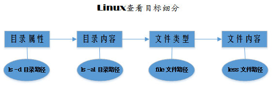

系列Linux命令行大全（三）
更新日期:
文章目錄
在《Linux命令行大全》一书中，第3章名称是 Linux 系统。概念太大，不过该节内容却是 Linux 系统最为核心的基础——查看 Linux 系统。

ls 命令
显示目录自身信息或目录中内容信息，也可只显示指定文件信息
ls
等同于 “ ls . “，显示当前目录下目录或文件名称，一般用空格隔开
ls 若干目录路径
显示指定目录下目录或文件名称，可有多个目录，目录间用空格隔开
ls 参数
-a 一般不显示隐藏文件（以"."开头），带上此参数即显示
-F 此项在列出的名称后加上类型指示符，目录是"/"，文件无符号
-h 文件大小以可读方式（如 MB）显示，而非字节数
-d 与 -l 结合使用，显示目录信息而非目录下内容；单独使用仅显示目录名
-l 长格式显示目录或文件信息，最为常用的参数
-r 以相反顺序显示结果；无此参数，默认按字母升序排列
-S 按文件大小排序，从上到下依次降低
-t 按文件修改时间排序，最新的位于首位
ls -l 结果说明
显示目录内容时，出现“总用量”一项，表示该目录下所有文件所占的文件块的总数
第 1 列：-rwxrw-r— 首位表示文件类型（文件 - 、目录 d 或链接 l），其后还有9位，每3位一组（分别为读权限、写权限、执行权限），依次表示该项所有者、该项所在组成员、其他所有人的访问权限
第 2 列：1 数字表示文件硬链接数目
第 3 列：root 表示文件所有者
第 4 列：root 表示文件所有者所属组
第 5 列：4096 数字表示文件大小（字节数），若使用 -h 参数，则可能是 K，M 等
第 6 列：1月 8 00:47 表示文件最后修改时间
第 7 列：下载 文件名称，若使用 -F 参数，则目录或链接的名称后有类型指示符
ls 实例
显示目录信息
ls -dl /usr/bin
显示多个目录下内容
ls -l ~ /usr/bin
显示文件信息
ls -ld /usr/bin/zip
或
ls -l /usr/bin/zip
file 命令
file 语法
file filePath[ filePath2 ...]
file 判定文件类型，其后可追加多个路径，空格隔开
单独使用 file，显示 file 详细语法，并不判断当前目录类型
实例
显示文件类型
file /usr/bin/zip
less 命令
less 用法
less filePath[ filePath2 ...]
less 判定文件内容，其后可追加多个文件路径，空格隔开。后面跟目录，会提示“这是一个目录”
文档快捷操作
使用 less 命令后，命令行显示文件内容。
若文件过大，当前屏幕不能全部展示。有多种快捷方式来加快文档查看、编辑和修改。
PAGE UP 或 b ： 后翻一页
PAGE Down 或 Spacebar ： 前翻一页
向上箭头键 ： 向上一行
向下箭头键 ： 向下一行
G 即 Shift + g： 跳转到文本文件的末尾
g ： 跳转到文本文件的开头
/characters : 向前查找指定的字符串
n ： 向前查找下一个出现的字符串，必须在 /characters 之后使用
h ： 显示帮助屏幕
q ： 退出less
实例
显示文件内容
less /var/log/syslog.1
扩展
ls，file，less 均能使用通配符，或者各种扩展。
这种做法能够简化对多个文件的操作。